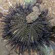
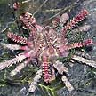
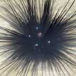
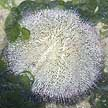
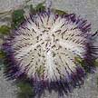
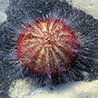

|
|
| echinoderms text index | photo index |
| Phylum Echinodermata > Class Echinodea > sea urchin | heart urchin |
| Photo
index of echinoids on Singapore shores sea urchins and heart urchins |
Size given is the diameter of the body without the spines.
 Black sea urchin Temnopleuris sp. |
 Thorny sea urchin Prionocidaris sp. |
 Diadema sea urchin Diadema setosum |
||
| About 5cm. Spines black, short. In sandy-silty areas. Sometimes seen in large groups. Rocky, rubble areas. Seasonally common on our Northern shores. | 4-5cm. Spines thick with small spines, banded pink and yellow or beige. Seagrass meadows. Seasonally common on our Northern shores. | 8-10cm, spines black sharp, up to 30cm long. Reef and rubble. Commonly seen on our Southern shores, more common in deeper waters. | ||
 White salmacis urchin Salmacis sphaeroides. |
 Passion salmacis urchin Salmacis virgulata |
 Two-toned salmacis urchin Salmacis bicolor |
||
| 5-8cm. Spines short, white banded maroon or green. Seagrass meadows. Seasonally common on our Northern shores. | 5-8cm. Spines short, all maroon, not banded. Spines on the sides longer, thicker and flattened. Seen among White salmacis urchins but not as abundant. | 5-8cm. Spines longer, white banded maroon. Seen once on East Coast Park. | ||
| 6-8cm long. Body teardrop-shaped, deep groove in front and tapered at the back. Petaloid not obvious in living specimens. Sparse, long spines banded, with many shorter spines. Sandy areas near reefs on some of our Southern shores. Seldom seen. | 8-10cm long. Body oval egg-shaped, without a deep groove in the front. Petaloid large, Dense short to medium spines. Near seagrasses and reefs. Sometimes seen on some of our shores. | About 2cm, oval mostly white with brown petaloid and brown patches. Sandy areas near reefs. Sometimes seen on Pulau Sekamau. |
|
photo
index of
echinoderms on this site
|